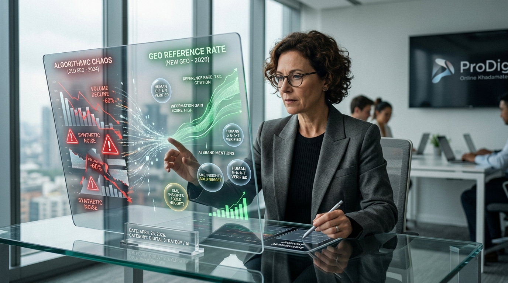

Del Caos Algorítmico a la Tasa de Referencia: La Metamorfosis del SEO al GEO y el Surgimiento de la Autoridad Humana en 2026

1. Introducción: El tsunami invisible
Internet está sufriendo una metamorfosis silenciosa pero devastadora. No es solo que la red esté saturada; es que nos estamos ahogando en un océano de ruido sintético que, paradójicamente, está volviendo a las marcas más invisibles que nunca. Muchas organizaciones han caído en la trampa de la automatización total, creyendo que producir más a menor costo es la clave del futuro.
Sin embargo, los datos de la Unidad de Análisis de Online Khadamate revelan una realidad cruda: el "colapso de la eficiencia". Aquellas empresas que sustituyeron el 100% de su redacción humana por modelos de lenguaje (LLM) sin supervisión técnica han enfrentado una erosión de hasta el 60% en su tasa de conversión en menos de ocho meses. Lo que parecía un ahorro operativo se ha transformado en una deuda técnica impagable, donde el costo de recuperar un dominio penalizado por contenido basura es hoy 12 veces superior a la inversión inicial en calidad. En este ecosistema, la eficiencia ya no se mide por cuánto publicas, sino por cuánta "señal" logras rescatar del ruido.
2. El fin del volumen: Por qué producir más es ahora el camino al olvido
Desde noviembre de 2024, la producción de contenido generado por IA superó oficialmente a la creación humana. No obstante, este hito marcó el inicio de la "entropía de datos": un estado donde el contenido se vuelve predecible, redundante y carente de alma. La tecnología actual es implacable: detectores avanzados capturan el contenido de modelos como GPT-4o con una precisión del 99.4%, permitiendo que Google relegue automáticamente los refritos sintéticos a la irrelevancia.
Para sobrevivir, el nuevo sistema de medición ya no es la cantidad, sino la Ganancia de Información (Information Gain). Esta métrica evalúa cuánto valor nuevo aporta una página en comparación con lo que ya existe en el índice. Los datos son claros: el contenido con firma de autor real y datos verificables retiene un 40% más de tráfico y evita la caída del 35% en el tiempo de permanencia que sufren las páginas de IA sin edición.
"El contenido que simplemente resume lo que ya está en la web no tiene valor a largo plazo. Google busca la 'fuente original', el esfuerzo humano que aporta algo nuevo al ecosistema de información." — Adaptado de los Principios de Calidad de Búsqueda de Google.
La idea de la "IA Humanizada" es un mito técnico. Mientras la IA sintetiza datos probabilísticos, el experto humano es "errático, anecdótico y valioso". Google prioriza esa singularidad humana —la pericia y la autoridad (E-E-A-T)— porque es lo único que la máquina no puede simular con veracidad.
3. De clics a menciones: El ascenso del GEO (Generative Engine Optimization)
En 2026, el SEO tradicional ha muerto. El éxito ya no se mide por la posición en una lista de enlaces, sino por la Tasa de Referencia (Reference Rate): la frecuencia con la que modelos como ChatGPT, Perplexity o Gemini citan y recomiendan tu marca en sus respuestas sintetizadas. En la era del "Zero-Click", el objetivo es ser la fuente de la respuesta, incluso si el usuario nunca visita tu sitio.
Para dominar el GEO, la estrategia se sostiene sobre tres pilares técnicos:
* Optimización Técnica de Rastreo: Configurar archivos llms.txt que actúan como un "menú curado" para guiar a los crawlers de IA hacia los fragmentos más valiosos, minimizando el ruido algorítmico.
* Datos Estructurados (JSON-LD): El uso de marcado semántico avanzado, especialmente el esquema FAQPage, es crítico para alimentar los sistemas de Retrieval-Augmented Generation (RAG) con respuestas precisas de entre 40 y 80 palabras.
* Profundidad en Tres Niveles: El contenido debe estructurarse en una respuesta directa (superior), contexto semántico (intermedio) y documentación técnica con referencias profundas (inferior).
La IA actúa hoy como un "concierge" que prioriza datos verificados sobre la fama. Un ejemplo revelador es el sector automotriz: mientras la percepción popular en México favorece a marcas históricas como Volkswagen (214 PP100), la IA, entrenada con datos objetivos de J.D. Power VDS 2024, recomienda a Mitsubishi (159 PP100) por su superioridad estadística en confiabilidad. La IA prefiere lo veraz sobre lo popular.
4. El retorno de la Web: El dominio propio como única "Fuente de Verdad"
Estamos presenciando "La Gran Convergencia", donde la lógica digital comienza a gobernar la realidad física. En este escenario, la página web ha recuperado su trono frente a las redes sociales, que se han convertido en "jardines vallados" (walled gardens) con contenido que sufre una "muerte en el scroll" en menos de 24 horas.
A diferencia del carácter efímero de Reels o TikTok, el sitio web es el "cerebro" que educa a los agentes de IA. En 2026, los agentes autónomos de los clientes entran directamente a los dominios corporativos para ejecutar transacciones, agendar citas o comprar productos sin intermediarios. La web ya no es un folleto; es la infraestructura crítica que valida tu existencia ante la inteligencia artificial.
5. El Activo Invisible: Tu empresa es más pobre de lo que crees
Muchas organizaciones son "arrendatarias del cerebro de sus empleados". Si el conocimiento no está estructurado, el activo más valioso se va a casa a las 5:00 p.m. ProDig propone una Arquitectura de Información en 3 Capas para convertir datos muertos en activos vivos:
1. Capa Roja (Confidencial): Secretos industriales y datos encriptados.
2. Capa Amarilla (Cerebro Interno): Procesos indexados para una IA privada que elimina la burocracia informativa.
3. Capa Verde (Fuente de Verdad Pública): Metodologías de éxito y autoridad técnica.
La Capa Verde es el combustible del GEO. Para que sea efectiva, debe contener "Pepitas de Oro": métricas y perspectivas que no existan en los primeros 5 resultados de la búsqueda actual. Solo así se logra un Information Gain Score que evite que Google te relegue a la página 4 como "útil pero redundante".
"La burocracia informativa es el impuesto más caro que está pagando hoy. Es hora de convertir sus datos muertos en activos vivos." — Manifiesto ProDig (2026).
6. El Factor Humano: La "Pepita de Oro" que la IA no puede alucinar
Para extraer valor real, aplicamos la Fórmula de Ejecución de Online Khadamate, centrada en extraer la experiencia vivida de los Subject Matter Experts (SME). Estas son las verdades que una IA, por definición, no puede alucinar.
Métrica de Rendimiento IA Genérica (GPT-4) Humano Estratégico Enfoque Online Khadamate
Originalidad de Datos Nula (Refrito) Máxima (Experiencia) Máxima (Data-Driven)
Velocidad de Producción Instantánea Lenta Escalada Híbrida
Resiliencia a Updates Baja (Riesgo Alto) Inmune (Autoridad) Inmune (E-E-A-T)
Confianza del Usuario Cuestionable Alta Certificada y Verificable
7. Conclusión: Hacia una arquitectura del pensamiento
En un mundo donde el 90% del contenido es ruido de máquinas, la "señal humana" es el activo más escaso y rentable. La transición del SEO al GEO no es solo un cambio técnico; es un retorno a la esencia de la autoridad y la veracidad. El futuro no pertenece a quienes automaticen más, sino a quienes logren que su pensamiento sea el pilar sobre el cual la IA del mañana construya sus respuestas.
¿Es su presencia digital un eco temporal en un algoritmo, o un pilar estructurado de verdad en el que la IA de mañana confiará?
Unidad de Análisis de Online Khadamate (https://onlinekhadamate.com) | Principios de Calidad de Búsqueda de Google (https://developers.google.com/search/docs/fundamentals/creating-helpful-content) | J.D. Power Vehicle Dependability Study (VDS) 2024 (https://www.jdpower.com) | Manifiesto ProDig 2026: Arquitectura de Información en 3 Capas | Google Search Central (https://developers.google.com/search/docs/essentials) | E-E-A-T (https://developers.google.com/search/docs/fundamentals/creating-helpful-content)